📖 Sejarah Singkat — Dari Mana Semua Bermula?
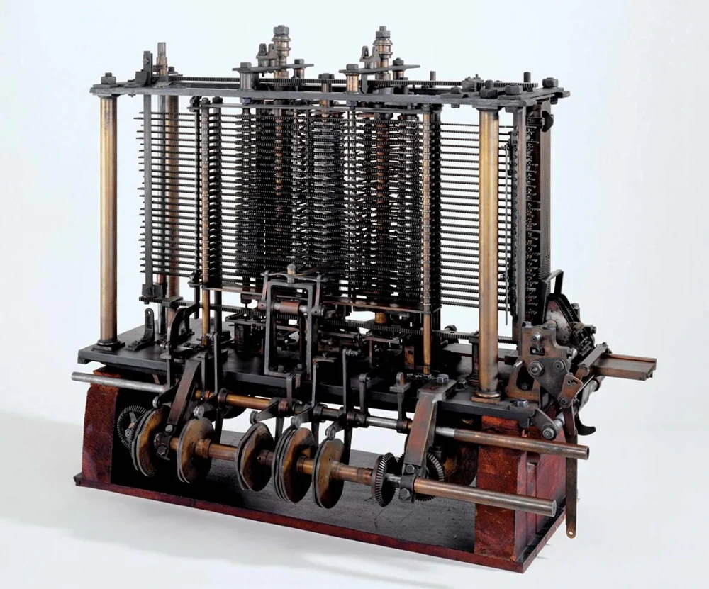
Konsep awal komputer
Konsep Komputer Paling Awal: Charles Babbage (1791–1871), seorang matematikawan dari Inggris, adalah orang pertama yang merancang Mesin Analitik pada tahun 1830-an — cikal bakal komputer modern dengan konsep memori, unit hitung, dan urutan perintah. Mesinnya belum pernah selesai dibangun, tapi gagasannya menjadi dasar semua komputer yang kita pakai hari ini.
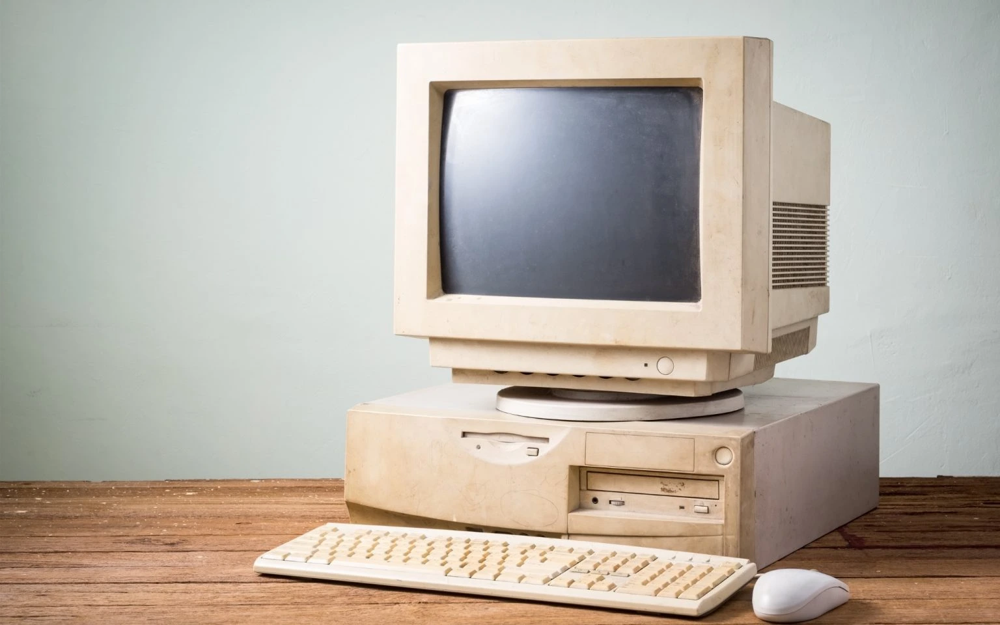
Komputer PC Jadul
Penemu Komputer Jadul Pertama: Pada tahun 1946, John Mauchly dan J. Presper Eckert dari Universitas Pennsylvania merampungkan ENIAC — komputer elektronik serbaguna pertama di dunia. Beratnya 30 ton, mengisi ruang seluas 167 m², dan pakai 18.000 tabung hampa udara.
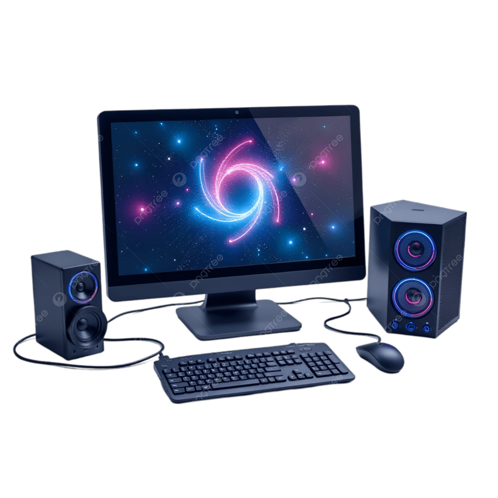
Komputer PC Modern
Komputer Modern: Konsep program tersimpan (program dan data disimpan sama di memori) ditemukan oleh John von Neumann tahun 1945 — inilah arsitektur yang dipakai semua komputer saat ini. Komputer pribadi rumahan pertama adalah Altair 8800 tahun 1975, ditemukan oleh Ed Roberts
🖥️ Penemu PC Jadul (Komputer Pribadi Pertama)
- John Blankenbaker — membuat Kenbak-1 (1971), diakui sebagai komputer pribadi pertama di dunia oleh The Computer Museum
- Ed Roberts — menciptakan Altair 8800 (1975), komputer pribadi pertama yang sukses dipasarkan secara luas
- Steve Wozniak & Steve Jobs — meluncurkan Apple I (1976) dan Apple II (1977), yang menjadi komputer rumahan pertama yang sukses besar
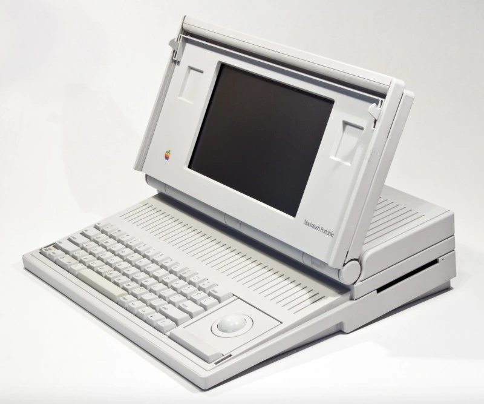
Laptop Jadul
Laptop Jadul Pertama: Osborne 1, dirilis tahun 1981 oleh Adam Osborne. Beratnya hampir 11 kg, layarnya kecil 5 inci, dan tak punya baterai — tapi dianggap komputer portabel pertama.
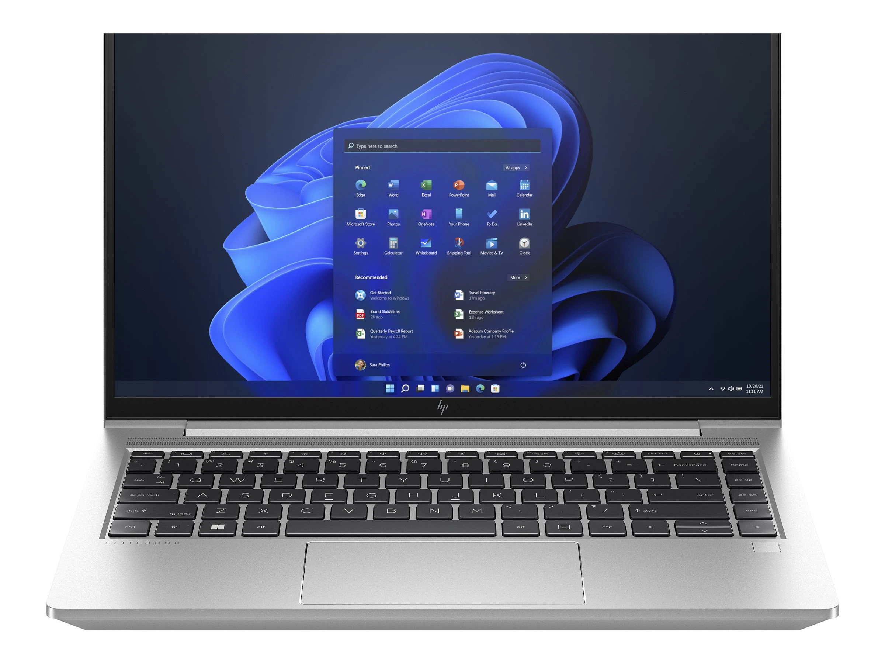
Laptop Modern Sekarang
Laptop Modern: Grid Compass 1100, dirilis tahun 1982 dan dirancang oleh Bill Moggridge. Bentuknya mirip laptop modern dengan layar lipat.
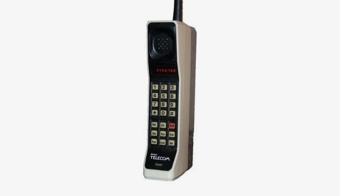
Handphone Jadul
Handphone Pertama: Martin Cooper dari Motorola melakukan panggilan telepon genggam pertama pada 3 April 1973 menggunakan prototipe DynaTAC. Ponsel komersial pertama muncul tahun 1983 — Motorola DynaTAC 8000X, butuh 10 jam isi daya untuk bicara 30 menit.
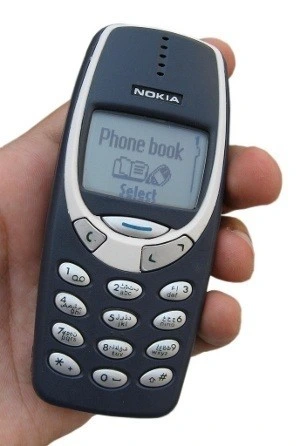
Smartphone Jadul
Smartphone Jadul Pertama: IBM Simon, dirilis tahun 1993. Punya layar sentuh, bisa kirim email dan faks — disebut ponsel pintar pertama di dunia.
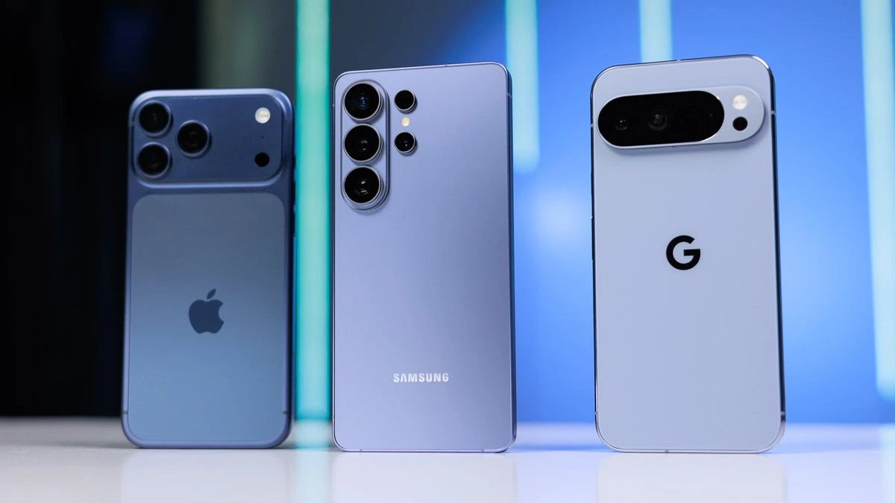
Smartphone Modern
Smartphone Layar Sentuh Modern: Layar sentuh kapasitif pertama ditemukan oleh Eric A. Johnson tahun 1965. Namun yang membentuk standar baru adalah iPhone yang diluncurkan Apple tahun 2007 — layar penuh tanpa tombol fisik di depan.
Siapa Programmer/Ahli IT Pertama? Ada Lovelace diakui sebagai programmer pertama di dunia karena menulis algoritma pertama untuk mesin komputasi tahun 1843. Lalu Alan Turing tahun 1936 memperkenalkan konsep mesin komputasi umum yang jadi dasar semua komputer saat ini.
🧠 Istilah Teknologi Dijelaskan Secara Sederhana
- Bahasa Pemrograman: Bahasa perantara antara manusia dan komputer — aturan kata dan perintah yang dimengerti mesin.
- Coding: Proses menulis perintah tersebut agar mesin melakukan tugas yang kita mau.
- Syntax: Aturan tata bahasa dalam bahasa pemrograman — seperti tanda baca dan susunan kalimat. Salah tulis, program tidak jalan.
- AI (Kecerdasan Buatan): Komputer yang bisa meniru kemampuan berpikir manusia — mengenal gambar, memahami bahasa, mengambil keputusan.
- Machine Learning: Cabang AI di mana komputer belajar dari data sendiri tanpa selalu diprogram per perintah — semakin banyak data, semakin pintar.
- Deep Learning: Bagian dari Machine Learning yang menggunakan jaringan saraf tiruan — meniru cara kerja otak manusia, sangat ampuh mengenal pola rumit.
- Generative AI: AI yang bisa menciptakan hal baru — teks, gambar, musik, kode — bukan hanya menganalisis yang sudah ada.
- Chatbot AI: Program yang bisa berbicara dengan manusia secara percakapan — seperti ChatGPT, Gemini, Claude.
- AI Agentic Modern: Sistem AI yang tidak hanya menjawab pertanyaan, tapi bisa diberi tugas lalu menyelesaikannya sendiri — mencari informasi, merencanakan langkah, dan menjalankannya tanpa perintah langkah demi langkah.
📦 GitHub — Apa Itu dan Mengapa Sangat Penting?
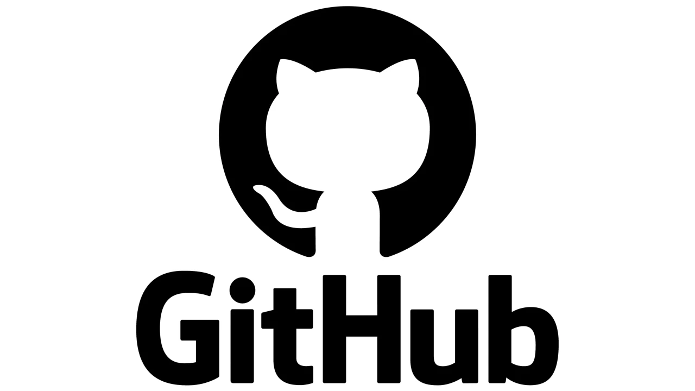
Logo Github
GitHub adalah tempat penyimpanan kode secara daring yang dilengkapi sistem pelacak perubahan. Sering disebut:
- 📱 Media sosialnya Anak IT — tempat berbagi proyek dan berinteraksi sesama pengembang
- 📄 CV asli yang nyata — perekrut bisa langsung melihat kualitas kode kamu, bukan sekadar tulisan di kertas
- ✅Bukti kemampuan IT seseorang — riwayat kontribusi dan konsistensi belajar tercatat jelas
- 💼Portofolio real yang sangat nyata — semua karya kamu tersimpan dan bisa dilihat siapa saja kapan saja
- 💰Aset digital yang sangat berharga di zaman sekarang — reputasi dan karya yang tak bisa dihapus
10 Fungsi Utama GitHub:
- Menyimpan kode dengan aman di awan — tidak hilang meski laptop rusak
- Mencatat setiap perubahan kode beserta siapa dan kapan mengubahnya
- Bekerja bersama dalam satu proyek tanpa saling menimpa file
- Bisa kembali ke versi lama jika terjadi kesalahan
- Menampilkan portofolio karya kepada calon pemberi kerja
- Mempelajari kode orang lain secara terbuka
- Berkontribusi pada proyek dunia nyata
- Mendokumentasikan proyek agar mudah dipahami orang lain
- Membuat salinan proyek untuk dikembangkan tanpa mengganggu yang asli
- Standar dunia industri — hampir semua perusahaan teknologi memakainya
Apakah penting? Sangat penting! Di zaman sekarang, GitHub aktif adalah bukti nyata kemampuanmu, jauh lebih meyakinkan daripada sekadar ijazah atau sertifikat.
💻 15 Bahasa Pemrograman Terpopuler — Penemu, Fungsi & Prospek Kerja
- Python 🐍
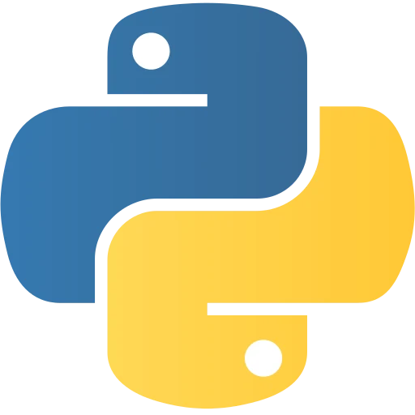
Logo Python
- Penemu: Guido van Rossum (Belanda), dirilis 1991 — namanya diambil dari acara komedi Monty Python
- Fungsi: AI (Kecerdasan Buatan), Data Science, Automasi, Web (Back End), Robotik Sederhana dan Robotik Skala Besar, Analisis Data, IoT (Sistem Pintar), Computer Vision, Alternatif Lomba Olimpiade Sains Nasional Bidang Informatika tingkat Nasional tapi sangat jarang dipakai
- Bisa untuk: Web (Back End), Data, AI/ML/DL (Kecerdasan Buatan), Automasi, Robotik Sederhana dan Robotik Skala Besar, Big Data, IoT (Sistem Pintar), Computer Vision, Alternatif Lomba Olimpiade Sains Nasional Bidang Informatika tingkat Nasional tapi sangat jarang dipakai
- Gaji Indonesia: Rp8–15 juta/bulan | Global: $90.000–110.000/tahun
- Kelebihan: Sintaks mirip bahasa manusia, sangat mudah dibaca, sangat mudah dipelajari, sangat cocok untuk pemula dari 0, dan komunitas raksasa
- JavaScript 🌐
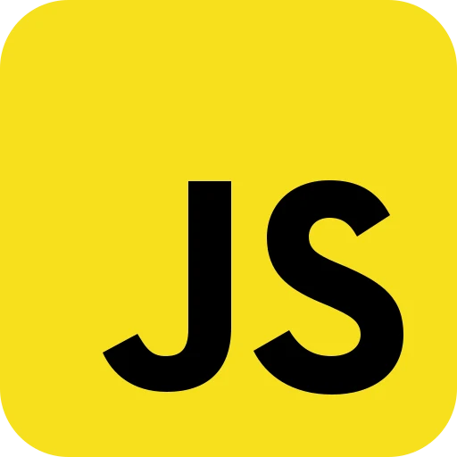
Logo JavaScript
- Penemu: Brendan Eich, diciptakan dalam waktu 10 hari tahun 1995
- Fungsi: Membuat halaman web menjadi hidup dan interaktif
- Bisa untuk: Web Front-End, Web Back End (Node.js), Web Full Stack, Aplikasi Mobile (Android dan iOS), Desktop PC
- Gaji Indonesia: Rp6–12 juta/bulan | Global: $85.000–105.000/tahun
- Kelebihan: Satu bahasa untuk depan dan belakang situs
- Java ☕
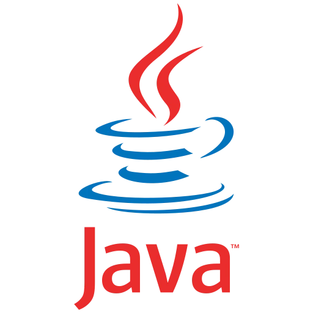
Logo Java
- Penemu: James Gosling di Sun Microsystems, tahun 1995 — namanya dari nama kopi kesukaannya
- Fungsi: Aplikasi perusahaan besar, Android, sistem perbankan
- Bisa untuk: Back End, Android, Aplikasi Besar
- Gaji Indonesia: Rp7–14 juta/bulan | Global: $95.000–120.000/tahun
- Kelebihan: Tulis sekali, jalan di mana saja — sangat stabil
- TypeScript 📘
Logo TypeScript
- Penemu: Anders Hejlsberg (yang juga buat C#), dikembangkan Microsoft tahun 2012 — adalah JavaScript dengan fitur tipe data
- Fungsi: Membantu menulis kode JavaScript yang lebih aman dan terstruktur
- Bisa untuk: Web Front-End, Web Back End, Web Full Stack, Aplikasi Besar
- Gaji Indonesia: Rp7–13 juta/bulan | Global: $90.000–115.000/tahun
- Kelebihan: Lebih sedikit kesalahan tersembunyi dibanding JavaScript
- C++ ⚡
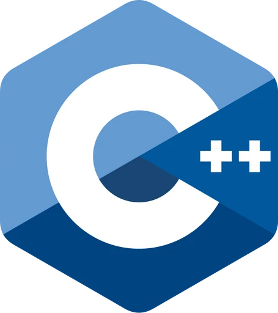
Logo C++
- Penemu: Bjarne Stroustrup, tahun 1985 — pengembangan dari bahasa C
- Fungsi: Sistem operasi, game, perangkat tertanam, Robotik Skala Besar, IoT (Sistem Pintar), aplikasi butuh kecepatan tinggi, Lomba Olimpiade Sains bidang Informatika Tingkat Nasional dan Internasional
- Bisa untuk: Sistem, Game, Robotik Skala Besar, IoT (Sistem Pintar), Performa Tinggi, Lomba Olimpiade Sains Nasional Bidang Informatika tingkat Nasional dan Internasional
- Gaji Indonesia: Rp9–16 juta/bulan | Global: $100.000–130.000/tahun
- Kelebihan: Sangat cepat, bisa mengontrol perangkat keras hardware
- C# 🟢
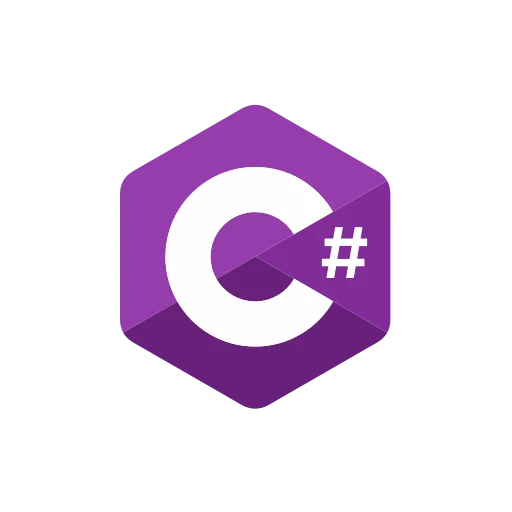
Logo C#
- Penemu: Anders Hejlsberg untuk Microsoft, tahun 2000
- Fungsi: Game (Unity), aplikasi Windows, layanan awan
- Bisa untuk: Game, Aplikasi Desktop PC, Layanan Microsoft
- Gaji Indonesia: Rp7–14 juta/bulan | Global: $92.000–118.000/tahun
- Kelebihan: Seimbang antara kemudahan dan kemampuan
- PHP 🐘
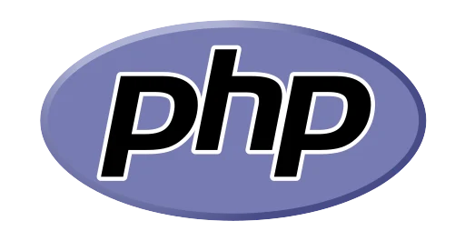
Logo PHP
- Penemu: Rasmus Lerdorf, tahun 1995 — awalnya cuma daftar riwayat hidupnya sendiri dalam bentuk halaman web, dan awalnya bukan Bahasa Pemrograman. Sebenarnya pada awalnya, PHP itu termasuk kumpulan skrip bahasa C untuk membuat Web Pribadi nya saja
- Fungsi: Membuat situs web dinamis — WordPress, Tokopedia, Facebook awalnya pakai ini
- Bisa untuk: Web Back End
- Gaji Indonesia: Rp5–10 juta/bulan | Global: $75.000–95.000/tahun
- Kelebihan: Sangat mudah dipasang di hampir semua penyedia layanan web
- Swift 🍎
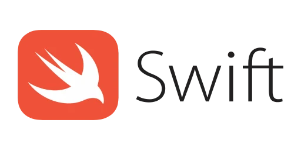
Logo Swift
- Penemu: Chris Lattner untuk Apple, tahun 2014
- Fungsi: Membuat aplikasi untuk iPhone, iPad, Mac, dan perangkat Apple lainnya
- Bisa untuk: Aplikasi iOS/macOS
- Gaji Indonesia: Rp8–15 juta/bulan | Global: $95.000–125.000/tahun
- Kelebihan: Cepat, aman, sintaks bersih
- Kotlin 🟣
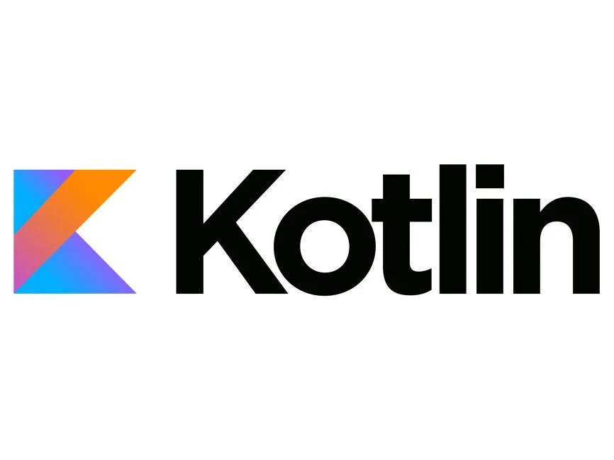
Logo Kotlin
- Penemu: JetBrains (perusahaan asal ceko dan pendiri nya orang Rusia), nama diambil dari nama pulau Kotlin dekat St. Petersburg, rilis 2016 — bahasa resmi Google untuk Android Modern
- Fungsi: Aplikasi Android Modern, server, multiplatform (Android dan iOS)
- Bisa untuk: Android Modern, Backend, Multiplatform (Android dan iOS)
- Gaji Indonesia: Rp7–13 juta/bulan | Global: $88.000–110.000/tahun
- Kelebihan: Lebih ringkas dan aman dari Java, tapi tetap bisa pakai kode Java yang sudah ada
- Go (Golang) 🐹
Logo Golang
- Penemu: Robert Griesemer, Rob Pike, dan Ken Thompson di Google, tahun 2009
- Fungsi: Infrastruktur awan (Cloud), Web Back End performa tinggi, layanan berjalan cepat, sistem skala besar
- Bisa untuk: Web Back End performa tinggi dan Cepat, Awan (Cloud), DevOps
- Gaji Indonesia: Rp9–16 juta/bulan | Global: $105.000–140.000/tahun
- Kelebihan: Cepat seperti C++, sederhana seperti Python — sangat diminati industri awan (Cloud)
- Rust 🔒
Logo Rust
- Penemu: Graydon Hoare di Mozilla, tahun 2010 — dirancang agar cepat dan aman dari kesalahan memori
- Fungsi: Sistem operasi, perangkat tertanam, komponen kritis kecepatan & keamanan
- Bisa untuk: Sistem Kritis, IoT (Sistem Pintar), Performa Tinggi
- Gaji Indonesia: Rp10–18 juta/bulan | Global: $110.000–142.000/tahun
- Kelebihan: Mencegah banyak jenis kesalahan program sejak awal — sangat diminati baru-baru ini
- SQL 🗄️
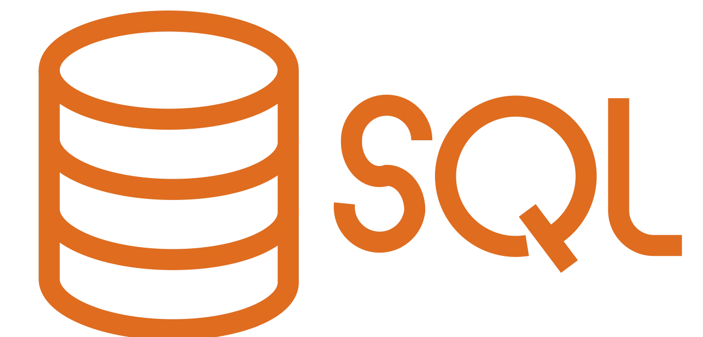
Logo SQL
- Penemu: Donald D. Chamberlin dan Raymond F. Boyce di IBM, tahun 1974
- Fungsi: Mengelola dan mengambil data dari basis data — dipakai di hampir semua sistem perangkat lunak
- Bisa untuk: Basis Data, Analisis Data
- Gaji Indonesia: Rp6–12 juta/bulan | Global: $85.000–148.000/tahun
- Kelebihan: Hampir semua sistem butuh ini — keterampilan wajib, bukan pilihan
- Dart Flutter 🦋
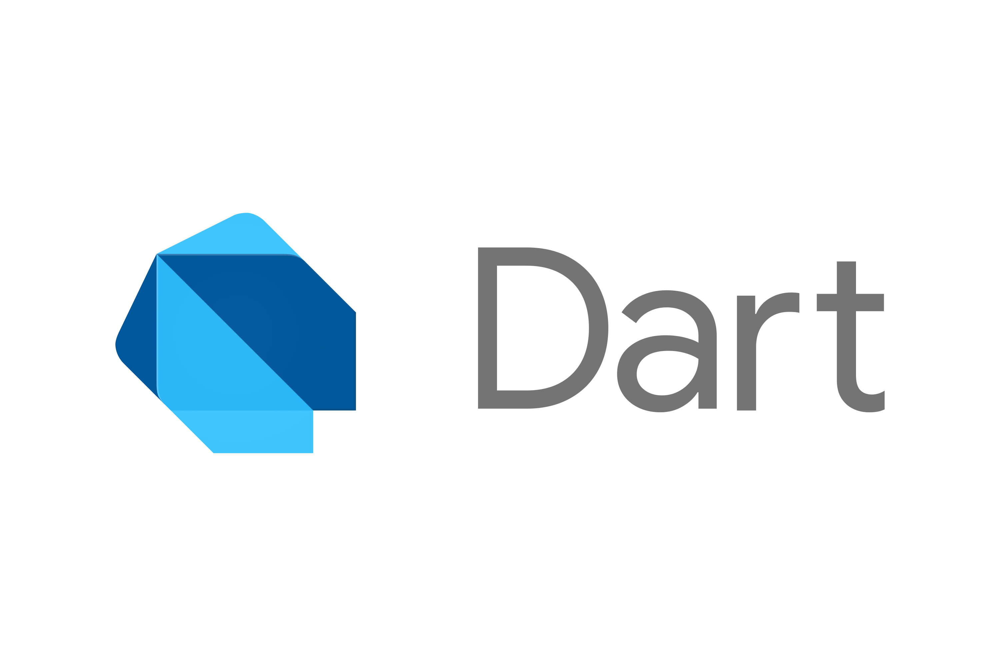
Logo Dart (Bahasa Pemrograman)
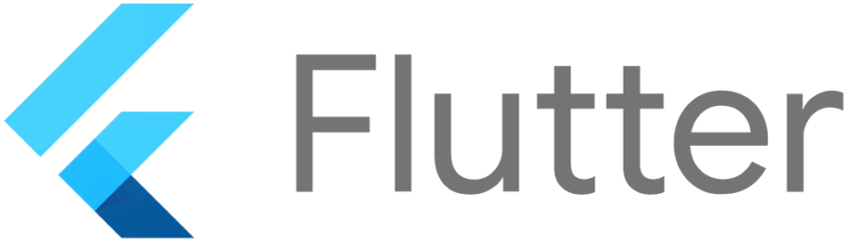
Logo Flutter (Framework Multiplatform Mobile App Dev)
- Penemu: Lars Bak dan Kasper Lund untuk Google, rilis 2011
- Fungsi: Membuat aplikasi satu kode yang berjalan di Android, iOS, web, dan Windows sekaligus dengan tampilan yang cantik
- Bisa untuk: Aplikasi Multiplatform (Android dan iOS), Web, Desktop PC
- Gaji Indonesia: Rp7–14 juta/bulan | Global: $85.000–110.000/tahun
- Kelebihan: Satu kode = semua perangkat — sangat hemat waktu dan biaya
- R 📊
Logo R
- Penemu: Ross Ihaka dan Robert Gentleman di Universitas Auckland, awal 1990 — dinamai dari nama mereka
- Fungsi: Statistik mendalam, visualisasi data rumit, penelitian ilmiah
- Bisa untuk: Data Science, Analisis Penelitian
- Gaji Indonesia: Rp7–13 juta/bulan | Global: $82.000–105.000/tahun
- Kelebihan: Sangat kuat untuk analisis statistik dan visualisasi
- Ruby 💎
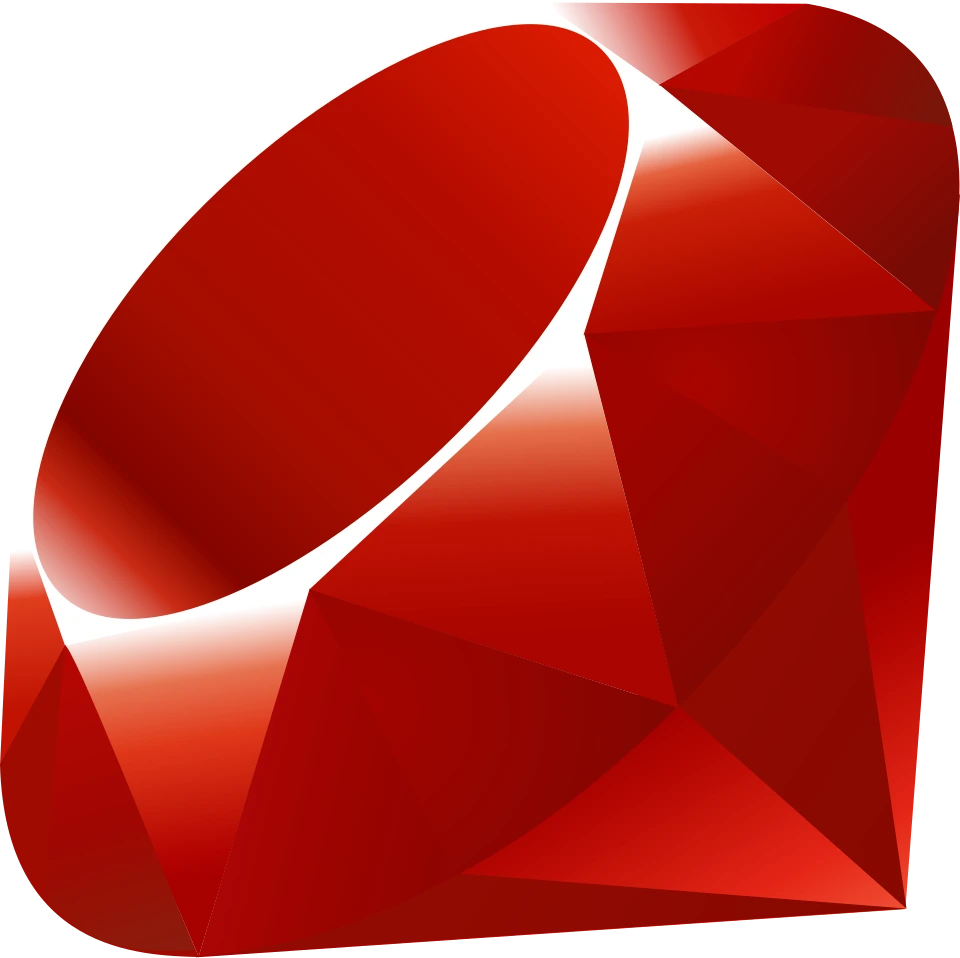
Logo Ruby
- Penemu: Yukihiro "Matz" Matsumoto (Jepang), rilis 1995 — dirancang agar menyenangkan dan alami seperti bahasa manusia
- Fungsi: Pengembangan web cepat (kerangka kerja Ruby on Rails banyak dipakai perusahaan rintisan)
- Bisa untuk: Web Aplikasi, Prototipe Cepat
- Gaji Indonesia: Rp6–11 juta/bulan | Global: $80.000–100.000/tahun
- Kelebihan: Sangat elegan dan menyenangkan untuk menulis kode
✅ Ya — Dart Flutter, Kotlin, Swift, JavaScript, dan TypeScript semuanya masuk ke dalam daftar 15 bahasa teratas yang paling banyak dipakai saat ini!
🌟 Bahasa Paling Serbaguna untuk Masa Depan?
Juara Utama: Python! 🐍
Kenapa? Karena:
- ✅ Sintaks sederhana — mirip bahasa manusia, sangat cocok untuk pemula dari 0
- ✅ Bisa dipakai untuk hampir SEMUA bidang: AI/ML/DL (Kecerdasan Buatan), Data, Automasi, Analisis Data, Web (Back End), Automasi, Robotik Sederhana dan Robotik Skala Besar, IoT (Sistem Pintar), Computer Vision dan Alternatif Lomba Olimpiade Sains Nasional Bidang Informatika tingkat Nasional tapi sangat jarang dipakai
- ✅ Dipakai oleh Google, NASA, Meta, Netflix, Spotify — perusahaan teknologi terbesar di dunia
- ✅ Permintaan kerja terus naik, terutama di bidang AI dan data yang sedang tumbuh sangat cepat
- ✅ Komunitas terbesar di dunia — ada jawaban untuk hampir semua masalah
- ✅ Bisa untuk pemula, mahasiswa, peneliti, hingga ahli profesional
Tidak ada bahasa yang sempurna untuk SEMUA hal, tapi Python adalah yang paling mendekati "bisa untuk segalanya" saat ini.
📝 Rangkuman & Kesimpulan
Dari impian Charles Babbage dan tulisan tangan Ada Lovelace di atas kertas, hingga AI canggih dan ponsel pintar di genggaman kita — kemajuan teknologi dibangun oleh ribuan orang dari berbagai zaman. Tidak ada satu orang yang menciptakan semuanya sendiri; setiap penemu berdiri di atas karya orang sebelumnya. Semua bahasa pemrograman punya kelebihan dan tujuan masing-masing — tidak ada yang terburuk, hanya ada yang lebih cocok untuk kebutuhan tertentu.
GitHub bukan sekadar tempat simpan kode — itu bukti perjalanan belajarmu, portofolio yang nyata, dan aset kariermu. Di antara 15 bahasa populer, Python menonjol sebagai pilihan paling serbaguna dan ramah pemula sekaligus mendominasi bidang masa depan seperti AI dan data. Pilihlah yang sesuai tujuanmu, mulailah dari satu bahasa, tulis kode, simpan di GitHub, dan teruslah belajar — karena di dunia teknologi, karya nyata yang berbicara paling keras.
📚 Referensi Utama
- Computer History Museum — Sejarah Komputer & Ada Lovelace
- Britannica — Martin Cooper & Penemu Ponsel, Ada Lovelace
- Wikipedia Bahasa Indonesia — Ada Lovelace
- IBM & PC Magazine — IBM Simon & Sejarah Smartphone
- Stack Overflow Developer Survey & StackShare — Peringatan Bahasa Pemrograman 2025–2026
- GitHub State of the Octoverse 2025 — Tren Pengembang Global
- Simplilearn & HCL Guvi — Bahasa Pemrograman Masa Depan